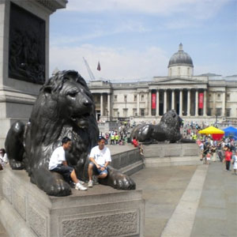

An American in Paris
London, England
This was my second time visiting London, and I absolutely love it!The city is noisy, vibrant, diverse, and innovative. If you have never been, it is easily comparable to New York City, except Londoners have more post accents.
 Trafalgar Square
 Carnaby Street, one of London's best shopping streets.
Carnaby Street, one of London's best shopping streets.
Big Ben
 Buckingham Palace
Buckingham Palace